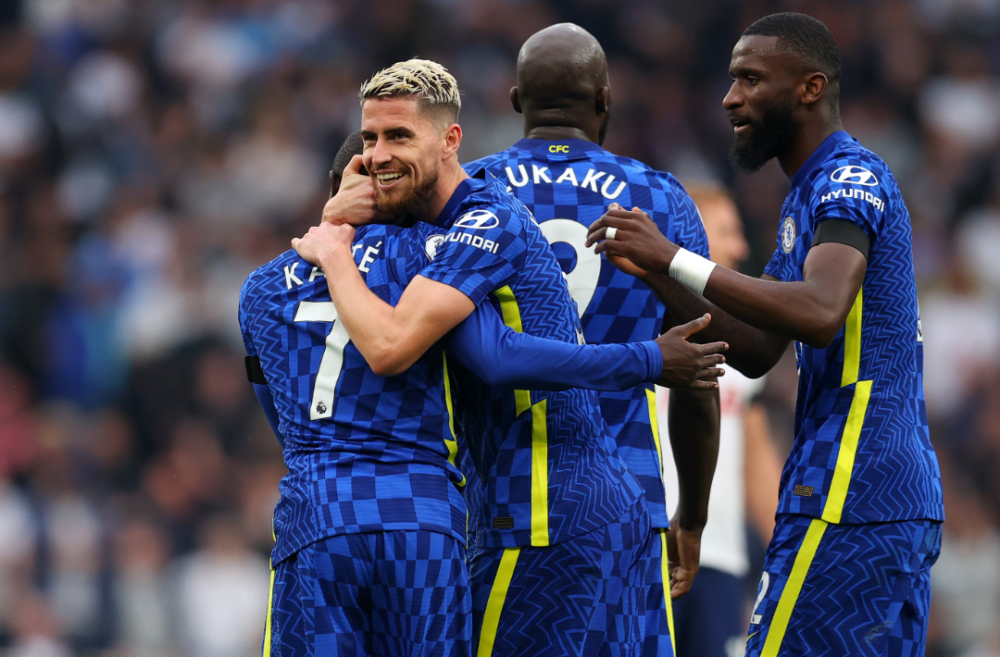
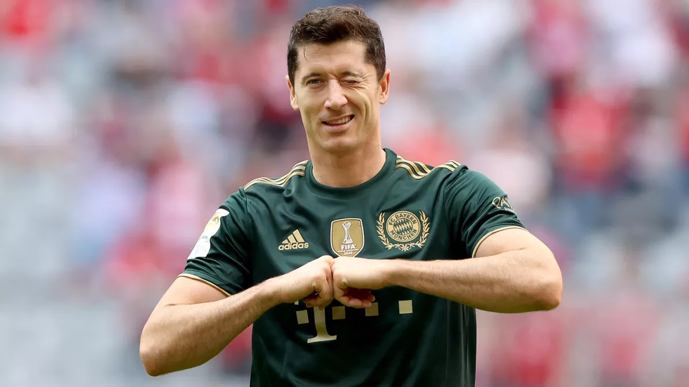
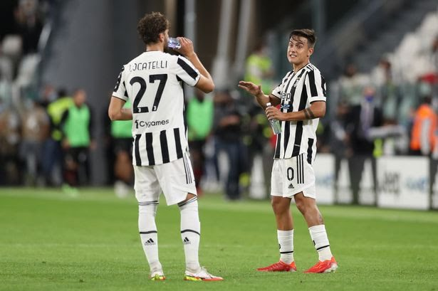

PSG victorious againt man city, as Liverpool win it's second game, while chelsea lose to Juventus as united clinch late win.
Barcelona lost 2 games in a row this champions league with 3 goals to nil in both gmaes. for more click here.

real celebrating after scoring againt Valencia, Date:20/09/2021.
Man city held draw by saints, united clinch a win, chelsea dorminate on the london derby.
Manchester city were held to goalless draw by Southampton at etihad stadium which saw city missing out there key players like Laporte and Stones who were rulled out due to injury, on the other hand livepool won 3-0 against palace at Anfield.
On sunday United won there match on London stadium as westham missed their penalty due to de gea save, Westham scored first bfore Cristiano Equalized and later lingard scoring for united the second goal which was the one that determined the winner. read more.
Bayern trashes Bochum seven goals to nil
Bayern clich a huge win as they trashed Bochum 7 goals to nil, while Dortmund beat Klon 4-2. Read all the Bungesliga round up news and highlight
Real madrid late goals rescue them from a loss.
Juve held by Milan to a 1-1 draw as they battle religation, while mourinho suffers first defeat.

Young boys after win againt man united. date:15/09/2021.
Yesterday was the beginning of the new champions league season with the likes of sevilla ,man united openning the tournament with a loss to swiss's side young boys where united were down to 10 men after Aaron wan Bissaka been sent off in first half. Barcelona had the same fate with a 3 nil loss to bungesliga giants with Muller and Lewandoski getting on the score sheet for bayern, while sevilla drew 1-1 with salzburg after salzburg missing out two penalties in a single game. with today being the second day of the gameweek with the likes of man city in action againt leipzig of germany in group A. for more fixtures and results click here.
Days ago after he broke the world record for the most international goals by male surpassing Iran's Ali Daei record, Ronaldo has now broken the sales record for thr first-selling shirtin premier league before even kicking the ball. The sale of the 'Ronaldo 7' shirt hit over 32.5m pounds in first 12 hours after they were released for sale. A united jersey cost around 80 to 110 pounds.read more according to nairametrics. 05/09/2021.
De Jong,griezmann & Saul. date:01/09/2021.
Yesterday was the last day of transfer dayline accross europe as antoine griezmann leaves barcelona and joins the la liga Champions atletico madrid on loan withe the obligation to buy.
saul niguez joins chelsea from atletico on a loan movie from atletico for 5 million euros with obligation to buy for 40 millions euros.
photo: Christiano Ronaldo.
Christiano is back at man united after 12 years spell at real madrid and juventus, the 5 times Champions league winner is back at man united after requesting to leave juve after 3 years at turin. Manchester united made a proposal after Ronaldo being linked up with their manchester rivals. The portuguese international completed his medical in lisbon in order to complete his move to united as confirmed by man unitef on there social media page on twitter.
bale celebrating with benzima after scoring.
Bale scored his first goal in madrid's shirt for almst two years for rea madrid in la liga but subsitute vinicius jr rescured real from defeat after two late strikes to grab a 3-3 draw at lavante.
Veretout's double helped Roma to earn a 3-1 victory against florentina in th is season opener, with new boy tammy impressing with 2 assists on the first game of the season.
The juventus forward came off the bench in 60th minute to snatch a dramatic stoppage-time winner,only for his goal to be ruled out for offside by VAR.

The gunners are facing a worst start in 118 season of playing in the top four league in EPL having lost thier openning games. the next fixure is crucial for Arsenal as they face the premier league Champions man city away at etihad, in Manchester will the gunners be able to defeat man city infront of their own fans.
Europeans top leagues are back for the new 2021/22 season, with the season underway we expect to see a tough season across all leagues with clubs streathening their squads with a top transfer names,with the likes of psg signing leo messi,Ramos. the new season brings out a new era in the pandemic of COVID-19 with the introduction of fans since the beginning of the pandemic.
Man city break's a british record for signing Aston villa skiper Grealish for 100M euros, it is believed that city boss is a big fan of grealish and he admired the player. After the signing of grealish it is said that the cityzens are ready to try again to sign harry kane from spurs this season, kane is ready to make a move after saying that he wants' to play for european footballand win sliverware as he considers the cityzens beingthe best club.

It is believed that the spurs talesmans want's to force a move from spurs to premier league rivals man city. Kane said the he wants to play for european league and consider the cityzens as the best team to win sliverware with, while bosses at spurs aren't ready to let kane to go after turning down a bid from man city of 100 million euros to sign the spurs talesmans'. Man city are ready to try again to sign kane if the situation at spurs is resolved.
Raphaël Varane completed his move to man united, and unvailed to the united fans on the first game for united of the season against leeds united where united trashed leeds 5goals to 1.
Ramos left Real Madrid upon the expiry of his contract in June after 16 years at the club, during which he won four Champions League crowns, five La Liga titles and four Club World Cups."I am very happy to join Paris Saint-Germain," Ramos said. "This is a big change in my life, a new challenge and it's a day I will never forget. Paris Saint-Germain "I am very proud to be a part of this ambitious project, to be a part of this squad with so many great players. Paris Saint-Germain is a club that has already proven itself at the highest level. I want to continue to grow and improve at Paris and help the team to win as many trophies as possible."The 2010 World Cup winner bid farewell to Real in an emotional press conference and claimed that he wanted to stay, but the club decided to withdraw a one-year contract offer by claiming it had expired.
The new Nike ball for the 2021/22 Premier League season has been revealed ahead of the campaign's fixtures, which were released on Wednesday 16 June. The latest version of the Flight ball marks Nike's 22nd campaign as the official ball supplier for the Premier League and will make its debut when the Premier League kicks off on Friday 13 August.This season's Flight ball sets itself apart with a bold graphic designed around the sphere and not locked into the panels. The base of the graphic is a black organic pattern inspired by the Premier League being one of the most exciting and connected leagues in the world. source:premierleague.com